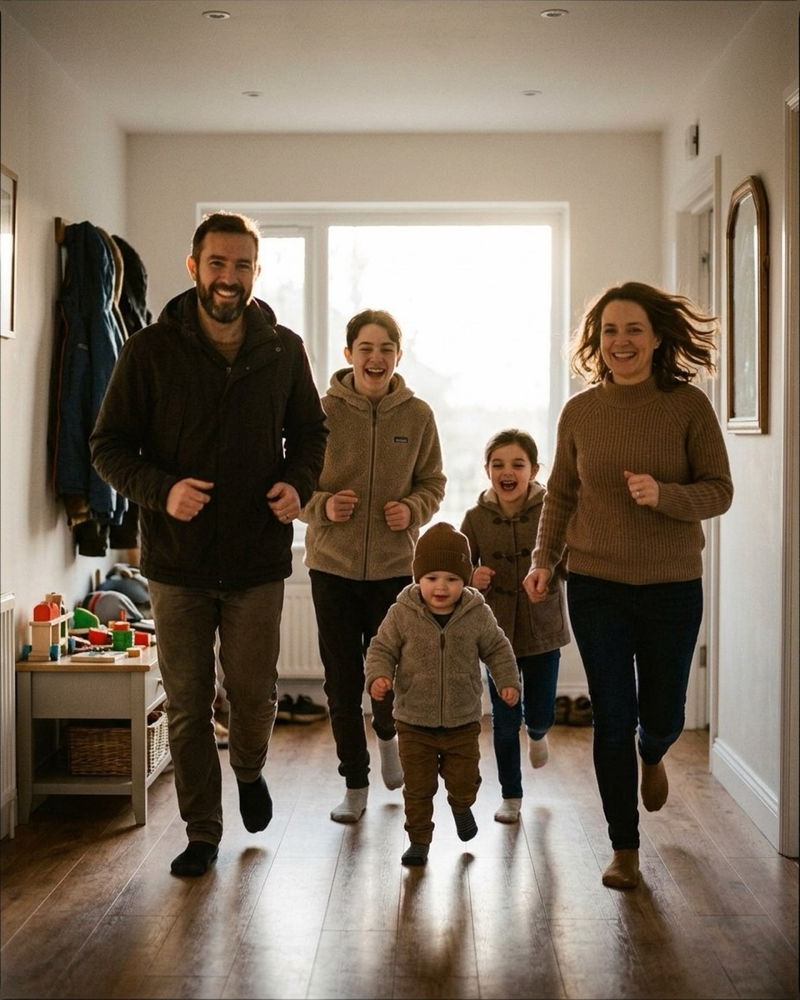
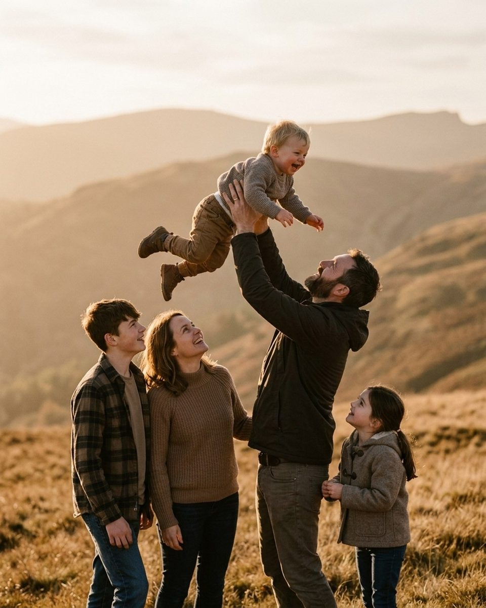
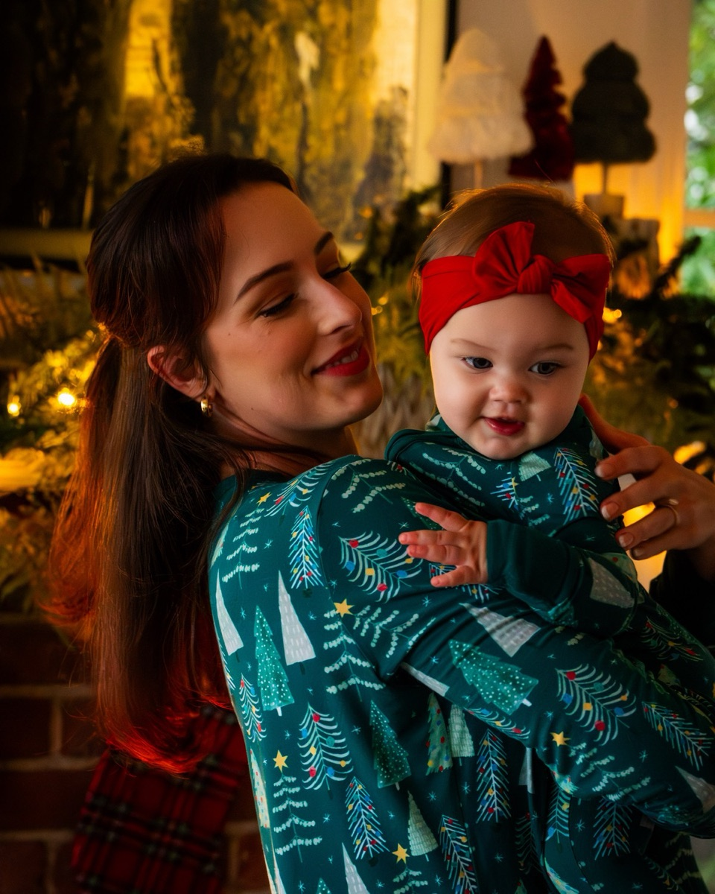
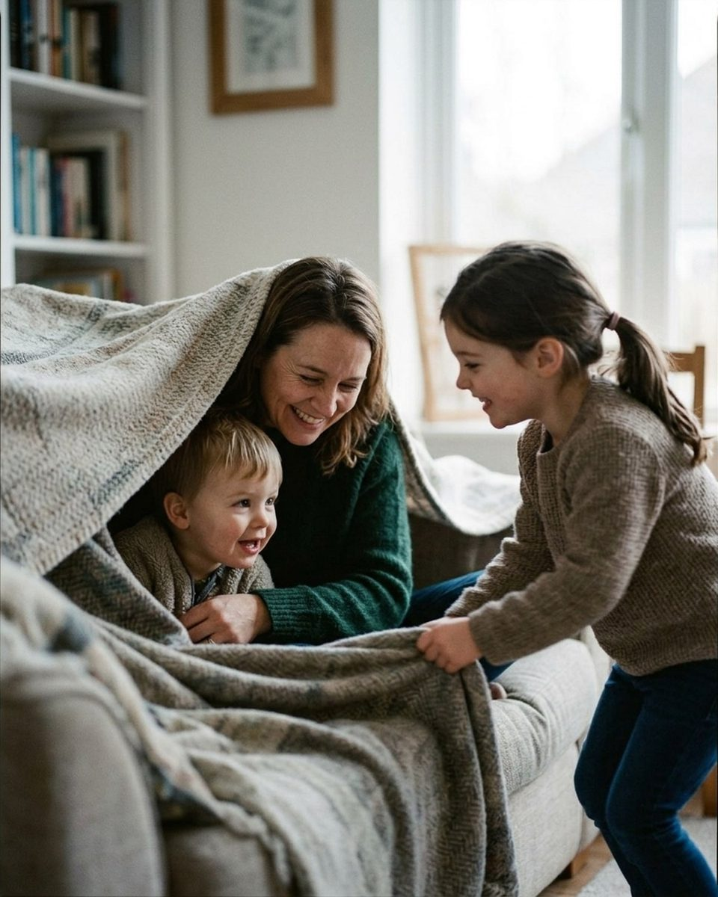
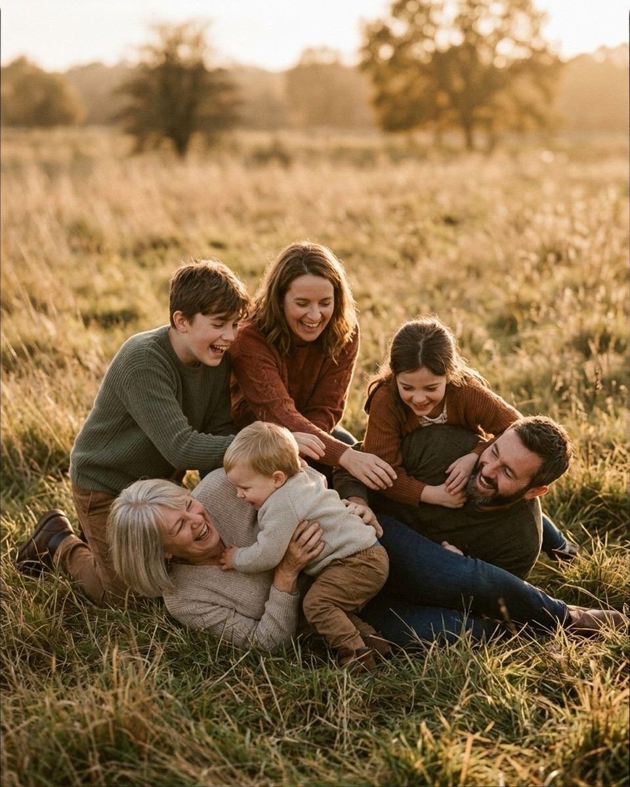

Posing a toddler who won’t sit still
Twenty prompts for the session where the child is going to move for the whole hour, grouped by how the hour actually goes — quoted straight from the Prompted catalog.
A toddler cannot sit still, and the first fifteen minutes of most family sessions are spent finding that out again. The parents arrive believing the day depends on their two-year-old holding a mark for four seconds, and when it doesn't happen they negotiate, then bribe, then apologise to you. By then the toddler has learned that the adults are tense and the whole thing is about them, which is the worst footing to shoot from. The fix is not a better bribe or a faster shutter. It is deciding in advance that the child will move for the whole hour, and building every frame so that movement is what the picture is made of. This guide is twenty prompts from the Prompted catalog for exactly that session, quoted word for word, with the pose each one belongs to and the moment to say it. They are grouped the way the hour actually goes: get them moving, use the parents as the structure, take the three seconds of stillness you are given, and have something ready for the meltdown. Most of the reference images below are AI-generated posing references rather than real session frames; the one real photograph is a contributed gallery image, and more are being added through the contributor program.

Stop asking them to sit, and give them somewhere to go
The single change that rescues a toddler session is replacing position with direction. A toddler asked to stand on a spot has a job with no end to it and will quit in about two seconds. A toddler told to run to a tree has a job with a finish line, and will do it four times in a row while you shoot the second and third pass. So pick a line rather than a mark: a path, a hallway, a stretch of shoreline, anything with a beginning and an end you can shoot down. Stand at the far end, shoot wide enough to lose them a little at the edges, and let the family walk it repeatedly. You are not catching one moment, you are running a short loop until the loop produces a frame.
It also changes what you say to the parents, which matters more than what you say to the child. They are watching their toddler fail to follow instructions and reading it as their own failure. If your first line tells them wandering is the photograph rather than the obstacle to it, the tension leaves the adults, and most toddlers settle the moment the adults do.
The kids don't have to sit still. Chase them. I'll keep up.
Nervous clientFrom the pose “Story time circle forest”
Say this in the first minute, before anyone starts managing the child. It hands the parents permission they were waiting for and names their job for the hour, which is to follow rather than control. Say it while already walking backward to your end of the line, so it reads as a plan rather than reassurance.
Just walk. Kids wander. That's the picture.
Nervous clientFrom the pose “Tickle pile”
Your opener for any walking frame. The second sentence is the one doing the work: it names wandering as the intended outcome, so the parents stop hauling the toddler back into the line and the group spreads into the loose, staggered shape that actually photographs well. Shoot a burst on every pass rather than waiting for them to align.
Race to that tree and back. Parents, you're allowed to lose.
PlayfulFrom the pose “Lift the littlest mountain”
Use this once the walking frames are done and the toddler is drifting. Point at something specific, twenty or thirty feet out. The instruction to the parents is the mechanism, not a joke: an adult genuinely trying to lose runs loose, face turned toward the child, which is the expression you came for. Shoot the return leg.
Ring around the parents — nobody falls down until I say.
PlayfulFrom the pose “Everyone look at baby”
Good for the stretch where you need the adults anchored and the children burning energy. The parents become a still centre you can expose and focus for while the toddler orbits them, so one setting holds through thirty seconds of chaos. The clause about falling down buys a second round, because every toddler wants to hear you say it.
Swing the little one on every third step — one, two, wheee.
PlayfulFrom the pose “Sandwich hug”
A walking frame with its own rhythm, which is why it works where a plain walk has gone flat. Counting out loud means you know when the lift is coming, so you can time the frame to the top of the swing, child airborne and every adult looking up. Needs two adults of roughly even height, one hand each.
Make the parents the furniture
A toddler who will not stand anywhere will usually stay put on a person. It is the most reliable trade in the session: you give up the standing family line and get a body of work where the child is held, carried, lifted or sat on, and the adults have something to do with their hands. The parent who was worrying about their own pose is now occupied, and occupied adults look better than posed ones.
Lifts are the strongest version and need the most direction. Tell the parent where the child goes and what to look at, and say nothing about their own face; the lift supplies the expression. Watch the arms: a parent unsure of the hold keeps the child at a stiff distance, and the frame reads as a presentation rather than a carry. Two seconds of a real lift is plenty, so expect to reset it rather than hold it.

Parents, you're just furniture right now. Comfortable, loving furniture.
Nervous clientFrom the pose “Piggyback parade”
Say it as you move into the carried and seated frames, and say it to the adults rather than about them. It resets their expectation for this part of the session: they are the structure the picture is built on, and they do not need to perform. Most parents visibly let their shoulders down when they hear it, which is itself worth the line.
Let the kids get heavy in your arms. Heavy is the picture.
CalmFrom the pose “Lift the littlest mountain”
For the carry that has gone stiff. A parent holding a child at arm's length is managing them; a parent letting the child's weight settle in is holding them, and the difference is visible in the shoulders and the angle of the head. Say it quietly and wait three or four seconds before shooting, because the settling takes that long.
Give her a little airplane lift and make your absolute best funny noise.
PlayfulFrom the pose “Mantel overhead lift”
The overhead lift, which is the frame most parents are nervous about and most want. The funny noise is not decoration: it makes the parent tip their head back and look up at the child, which is what connects the two faces in the frame. Shoot from chest level so the lift reads as vertical, and keep it short.
There's no wrong way to hold your kid. They'll show you where they fit.
Nervous clientFrom the pose “Toddler toss”
Use it the moment a parent asks you how they should be holding the child, which they will. Answering the question directly produces a careful, arranged hold. Handing it back to the child produces the hip they always use at home, and that is the one their family will recognise in a print.

Nuzzle your nose right into her cheek and make a little silly sound.
PlayfulFrom the pose “Hip cradle gaze”
For a toddler held high on the chest who has started looking around the room instead of at anyone. It gives the parent a physical action with a target, and the child's reaction is to turn in toward the face rather than away from it. Focus on the child and let the parent's expression take care of itself.
Take the three seconds of stillness you are given
You will get a few windows of genuine stillness in an hour, and they are short and badly timed. The mistake is spending them on the one frame the family asked for, because the group photo with everyone looking at the lens takes longer to assemble than the window lasts. Take that frame early, as a transaction the toddler can understand, then spend the rest of your still moments on quieter frames that only need the adults to hold position.
Stillness in a toddler arrives attached to something: a blanket, a lap, a thing to hold, a space small enough to feel like a den. Give them somewhere to be rather than somewhere to stand. The prompts here all compress the group inward, which also makes the frame easier to light and focus, because every face sits on roughly one plane.

We'll get one photo where everyone smiles at me for Grandma. Then we play. Deal?
Nervous clientFrom the pose “Nose boop line forest”
This is the frame the family came for, and it is best taken early and named out loud as a deal. A toddler who has been told the looking-at-the-camera part is brief and followed by playing will often give you it; a toddler asked for it in minute fifty will not. Have your exposure set before you say the line, and take three frames, not thirty.
Tuck the smallest one into the middle and let them get cozy.
CalmFrom the pose “Blanket fort peek”
Use it for any frame built around a blanket, a sofa or a lap, indoors or out. Putting the toddler in the centre of a group gives them walls, and most will stay in a place that has walls far longer than they will stay on a mark. Let them fidget inside the space rather than correcting them out of it.
Whisper-count to three, then everybody squeeze whoever's closest.
Nervous clientFrom the pose “Picnic blanket”
A reliable way to close the gaps in a seated group without naming anybody's posture. The whisper is the part that matters with a small child in the frame: a counted-down shout makes a toddler flinch or look for the noise, while a whisper pulls every head in toward the middle. Shoot immediately on the squeeze and again as it loosens.
Nobody has to look at the camera. Look at whoever you love most in this group.
Nervous clientFrom the pose “Heads together huddle”
The line to reach for once the one group frame is done. It takes the camera out of the equation entirely, which is a relief for the adults and removes the thing the toddler keeps being asked to do. Expect the adults to look at the child and the child to look at nothing in particular, which is the correct outcome.
Breathe in, drop your shoulders, and just look down at that sweet face.
CalmFrom the pose “Hip cradle gaze”
For a held child in soft light when you want one quiet frame in a session that has otherwise been loud. Three instructions in order, each of them something a body can actually do. Give it a full beat after the breath, because the shoulders drop a second later than people expect them to.
Have something ready for the meltdown
At some point in a toddler session the child will cry, refuse, go limp, or simply walk off toward a car park. This is ordinary, but the parents will experience it as a failure unless you have said otherwise in advance. The most useful thing you can do is have a sentence ready before it happens, so that when it does you are the only calm adult present and everyone takes their cue from you.
What follows should be a pause, not a workaround. Stop shooting the group, take the pressure off the child, and give yourself something to do meanwhile: the parents alone, a detail, the siblings, one frame of the child with an object in their hands. Most toddlers come back within five minutes if nobody is asking them for anything, and those frames are often the best of the hour.

If the toddler melts down, we roll with it. Meltdowns are ten percent of my portfolio.
Nervous clientFrom the pose “Look at each other laugh”
Say this before it happens, in the first few minutes, not in the middle of the crying. Said early it is a plan and it lowers the stakes for the whole hour. Said late it sounds like you are covering for a session going wrong, and the parents will hear it that way.
If someone cries, we take a snack break. That includes the adults.
Nervous clientFrom the pose “Everyone look at baby”
Your line for the actual moment. It gives the break a name and a purpose, so stopping does not feel like quitting, and it quietly tells the parents that you are not keeping score. Use the break: shoot the two of them together while the child eats, and you will have a frame they did not ask for and will buy.
Take all the time you need to settle her in. We work entirely on her schedule.
Nervous clientFrom the pose “Hearth tummy time”
For the restart, especially indoors and especially with a child at the younger end of toddling. Saying the schedule belongs to the child removes the clock from the room, which is what the parents are actually anxious about. Set your frame while they settle so you are ready when the child is.
Let her hold the box and take her time exploring the paper.
CalmFrom the pose “Gift box solo sit”
The solo frame to fall back on when the group is spent. An object in the hands will hold a toddler's attention for a minute or two, which is long enough for a sitting portrait, and it keeps their hands busy and low instead of in their mouth. Shoot from their eye level, on the floor.
Everybody tickle the person on your left. Go.
PlayfulFrom the pose “Blanket fort peek”
The way back in after a break, and the frame to end on. It is the one prompt here that needs no setup and no cooperation from the toddler, because the laughing happens around them whether they join in or not. Hold the shutter down; the usable frame is almost never the first one.
What to tell the parents when you book it
Most of the difficulty in a toddler session is created before you arrive, by a family who thinks the photographs depend on their child behaving. Say in the booking email that you expect the child to move the whole time, that you shoot for movement rather than against it, and that the looking-at-the-camera frame comes early. It costs two sentences and changes who you are working with: parents told what to expect spend the session following their child instead of apologising for them. The same principle runs through directing kids without bribing them, which covers what to do instead of sweets, and 20 things to say to get natural smiles at a family session, which is the broader script this guide narrows down. If the child is younger than the ones here and still being carried for most of the hour, baby posing prompts: where to put the parents' hands is the closer fit, and for the frames where the whole group has to hold together at once, posing a family of five without it falling apart handles the sizing problem.
The Fall Mini Session Shot List
About 25 poses grouped by family size, each with the words to say. A free PDF, sent once you confirm your address.
One email to confirm, one with the PDF. Unsubscribe any time. No selling, no sharing.
Every prompt in this guide is in the app, with the pose it belongs to.
Prompted is the posing app that is only a posing app: 250+ poses, each with word-for-word prompts in four tones, filtered to the light you're standing in. The sun tracker is free forever.
Get Prompted on the App Store